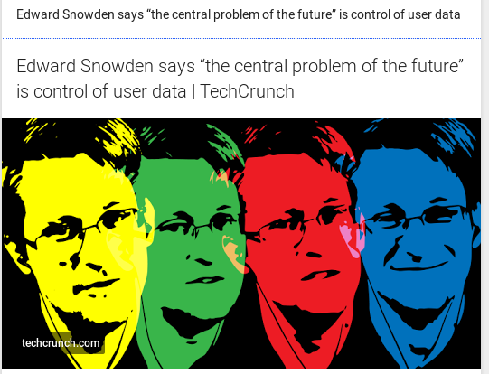

Whitepaper
Introduction
The growing trend towards the centralization of online tools has severe privacy and security implications. The underlying networks create a single point of failure, hackers have it easier to get to valuable and sensitive data, and network providers can be bullied by local governmental agencies to disclose confidential information about their clients and users.
Welcome to the age of Snowden and Wikileaks. The chain knows there is a substantial need to protect privacy in online communication. And things might only be beginning. The emergence of the ‘Internet of Things’ (IOT), heralds a new age in the era of mass surveillance. TV’s that record bedroom conversations, phones and tablets tracking your every move, and even smart glassware that keeps track of what you’re drinking.
This is where the case for decentralization begins in our eyes. At the moment, everyone is forced to put our trust into one or several organizations. People trust banks to keep their funds secure. We trust cloud storage services to keep our documents and data available and private. And we trust social networks to only show our pictures to the people we want. All of this requires a high level of trust in these organizations. Yet, we have no control or even information about how these organizations work. There is no guarantee that they won’t change their mind on privacy decisions, go completely out of business, or be acquired by a company with different views on privacy.
The core innovation of blockchain technology is its ability to validate all activity on the network in a decentralized manner, without the need for a trusted authority. More and more specialized blockchain applications are popping up to alleviate some of the above issues such as Ethereum, Z-cash, or Namecoin. But these chains suffer from a variety of drawbacks. Current chains are energy inefficient and suffer from poor or limited performance. Just think of Bitcoin’s confirmation times.
Dawn solves these problems by creating a decentralized, compatible, grpc-speaking Byzantine fault-tolerant network of application specific blockchains. On top of that, we aim to build an ecosystem of connected apps and websites that will empower users to use crypto-currencies in their everyday life. This is going to take years, but we will be in full swing in a matter of months.
Most of all, we believe it should not be difficult to create apps for blockchain projects and will provide clear documentation on our codebase. We feel this is where other, similar projects are lacking severely, and this is hurting the broad adoption of these platforms with the mainstream population. This is where we aim to dominate: creating and developing new applications for Dawn will be straightforward, and there will be clear paths to monetization.
Dawn:
- A community orchestrating products in:
- Hardware
- Software
- Services
- A network of communities scattered around the globe
- An economic community
- Opposed to centralization
- Local, then global
Crypto and scalability issues
Almost every cryptocurrency to date has run into issues of network speed and scalability. The main outcome of this matter is that most chains become bloated and grow to an enormous data size. Dawn aims to solve this issue by introducing the concept of application-specific chains and using an advanced interchain communication model to allow for easy transmission of information between different blockchains. The benefits of this approach are evident. By limiting the chains to serve a particular use in our ecosystem, we can optimize them for that specific use. This, in turn, enhances security, speed, and scalability.
Another benefit of the multi-chain approach is that the community can create an unlimited number of uses for the Dawn ecosystem. This gives us an unprecedented level of flexibility and gives the Dawn project an electric growth potential.
At first, we will launch our financial chain that handles the creation, distribution, and management of the Ray token. In the months after the launch of our token chain, we will release feature-specific chains along with the respective applications that will utilize these chains.
Cryptocurrency Adoption
The adoption rate of crypto projects is relatively slow today. We feel that this is mainly due to the level of technical expertise that is needed to understand and use the current platforms to their full extent. But also because most current platforms focus on highly specific niches of business and society. This is why we will launch a social blogging platform on top of its own, specialized chain, to reach a wider audience that is not yet familiar with cryptocurrencies. Content creators of this platform will receive a share of the daily created Ray. We have seen this idea successfully implemented by the Steem project, but we feel that their economic model behind it was not fair and overly complicated. Our core values are simplicity and openness, and this will reflect in our social blogging platform, which will have a strong focus on sharing multimedia content. By using webtorrent, we can decentralize the distribution of user-generated video content on the blockchain.
This will also foster a greater sense of community in the crypto community. And we believe that a strong community can make the difference in the adoption of projects such as this.
But even more than the community, we believe it is the combination of openness and user-friendliness that will make the difference here. Think about what Wordpress has done for the web. It enabled millions of people who had no previous coding experience to start creating websites. This is an empowering tool that most humans did not have access to before. This is our goal. Put decentralized tools in the hands of the people to allow for a fairer and private distribution of the tools that are currently shaping our online world.
Open Hardware
Disturbing news such as the _NSA implanting backdoors on Cisco devices_ (http://arstechnica.com/tech-policy/2014/05/photos-of-an-nsa-upgrade-factory-show-cisco-router-getting-implant/) creates an urgent need for open hardware devices that allow end-users full control over their data and can verify the integrity of the actual device. "Open hardware," or "open source hardware," refers to the design specifications of a physical object which are licensed in such a way that said object can be studied, modified, created, and distributed by anyone. Once we have launched a hardware product, we will begin to encourage others to build it and help them to scale their production to the point where prices drop.
This gets into much of the purpose and motivation of the people behind Dawn. Today we live in a world where we accomplish what would have been considered miracles just 50 years before, and probably voodoo spells 150 years before. Our team is located in Siem Reap Cambodia, and we can speak to our families in Europe and the US. There are enough resources to fly around the world semi-casually. This said, due to poor design of physical products, there is a lingering and deeply harmful sensation of scarcity on planet earth today, when the reality is anything but. Some of that scarcity is true: no matter how big our goals, it isn’t going to be possible for us to make life for everyone as privileged as Bill Gates life. There are two reasons for this:
- If everyone consumed the way Gates does, there wouldn’t be enough resources on earth.
- The fact of the matter is that while I don’t like or use Gates’ product, he made something that put advanced computation into the hands of millions more people than would have had access otherwise. That’s hard, and indeed, I think he should receive more resources than most because of his (succeeding in a very difficult venture.) contribution to society in general.
...What does that have to do with open hardware?
Great question! Open, modular hardware solutions are an economic imperative, not only a personal privacy and user-control imperative. Open solutions evolve faster than closed solutions, and we’re going to study the conditions under which they develop best, and continually push them forward. You deserve to own what you buy.
...What does that have to do with the Dawn blockchain?
Everything. If the community wants secure networked services, it needs secure hardware, and after carefully surveying the marketplace over a period of years, we’ve come to the unfortunate conclusion that nearly everything is highly insecure, and almost nothing is sufficiently open.
One of the problems we are addressing is universal access to technology. Open source software has created multiple industries in just a few decades. Open source hardware, especially when combined with new manufacturing technologies, is poised to do the same. Parts of this process will be on-chain, such as the actual open-sourcing of plans. Parts of this process will involve the mobilization of our community behind open product development and brands.
Operating Model
The Dawn operating model consists of several application specific chains working together to form the Dawn ecosystem.
The Dawn Token blockchain
The Dawn token chain is the financial heart of the Dawn network. It validates every token transaction and activity on the system. It provides a decentralized and Byzantine fault tolerant encrypted database for all of the financial transactions on the Dawn network. Our blockchain technology allows for the easy creation of side-chains and apps through the use of standardized API libraries that do what the user expects them to do.
The Dawn chain will become the financial chain for different application specific chains. Every chain that uses the Ray token will be using inter-blockchain communication to share information with the financial token chain. This is done to ensure speed and scalability over an extended period of time. We will first launch the Dawn financial chain and token. Over the following months, we will be releasing the other features as stand-alone chains that interoperate with the Dawn block chain.
We will release documentation on how to quickly launch your chain and connect it to the Dawn chain as well.
Here's the order of events here:
- FinChain, currently being built
- Validator Node/Routers launch to coincide with FinChain launch (Q1 2017)
- Validator Node/Router will be sold in cryptocurrency only by FinChain
- 50% of router profits will go to token holders
- 50% of router profits will go to OHSF (Open Hardware Slush Fund)
- Other electronics will be sold in the same manner. Designs will be given away. Software will be Free as in RMS as in GNU, free. Or, if you'd like, nonexistant.
The Dawn network
Peers will get chosen according to their hardware and connectivity capabilities. Preference is given to nodes with the highest hardware specs and bandwidth. This allows for the gamification of the validator selection. We expect people to compete against each other to become the top elevated peer.
The distributed anonymous computing network that our validators form will support the hosting of geocached, containerized applications. This allows the chain to provide low-cost, high-performance applications to the public. These hosting services will be fueled by the Ray token.
Our open-source validator node routers will provide plug & play access to the Dawn network and its applications.
Here's what v0.5 looks like:
- Node location resolved with GeoIp
- Node placement is based on network usage
- Scores computed like:
- First priority is to have good coverage of the whole world. We can't help it if someone fakes their geoip and we know it.
- Second priority is to have low ping times to other nodes
- Third priority is to have high bandwidth links to other nodes.
That's woefully incomplete for a reason: to say that we'll crack this particular nut quickly would be nonsense. This is to be a living document, it will be updated when necessary and when we're more equipped to tackle that set of challenges.
RAY
Definition
Ray is Dawn's “native token.” It will not have a premine or allocations in the genesis block. Ray tokens are paid to validator nodes at the creation of new blocks. 10% of mining proceeds will be paid to the team ad infinitum. While currently an oligarchy, blockchain governance will be added to ensure that the team is not a statically defined variable. The blockchain itself, as a community, will select the team via a process that should never be referred to or thought of as democratic.
The Dawn social blogging platform
Our social network provides a user-friendly interface to publish and share multimedia or regular content on the internet. We will integrate p2p video sharing via webtorrent technology. This allows for truly decentralized streaming of video content. In the case that there are no seeders available, we will be providing a seed server of last resort, so that all the user-generated content is available to every other user at all times.
We firmly believe in privacy and will implement encryption in every step of the process. All of the content will be encrypted on the social blockchain, as this allows for more control over the privacy of your content. You can choose to keep your content private or post it publicly. Only public content will be eligible for token rewards.
Your stored encrypted content will always be available to the key holder. We make no effort to protect anyone from fake news whatsoever and discourage those needing protection from joining our site.
We admire the Steem project for their effort to distribute crypto tokens to a wider audience than the typical Bitcoin enthusiast. They managed to lower the hurdle to gain access to crypto dramatically. We aim to re-create that concept by allowing content creators to receive rewards based on the popularity of their content. We don't allow people to vote directly on content but will use an algorithm that defines the most popular posts in each category and pays them out accordingly.h3 social payment algorithm
- total views
- social shares
- comments
- tips
- inbound and outbound link topology
Why we like this way of doing things
- It funds the production of awesome content.
- Network effects of per-view compensation.
The exact algorithm will be published when we release this feature. We will implement a passive verification system and advanced harmful-bot detection scripts to ensure the fairness and integrity of these payouts, and pass the source code downstream because it matters to the network.
Our technology allows and encourages end-users to create their own applications. Thoughtful gRPC APIs will be implemented to make this simple.
We aim to release the back-end blockchain and beta version of the social platform in the first quarter of 2017.
IM
We feel there is an immediate need for a decentralized, encrypted communications platform. We want to address this need by implementing an integrated and encrypted messaging application built into the website and wallet. This privacy centered messenger allows for fully encrypted communications between any group of users. This messenger service will run on its own blockchain. This allows for the easy integration of our service with other applications, websites, and services. We will also add p2p video chat to this at a later stage. Anonymity through pseudonymity here: Encrypted connections will be from wallet to wallet without intermediaries.
This is a dogfood project for the team. Expect it to be built for modern, decentralized collaboration. Expect compliance to as many current standards as we can. Expect immutable IRC logs.
Governance
We believe that crypto governance is one of the biggest issues that blockchain projects are facing currently. Over the last years, we’ve seen several examples of governance gone wrong. But what is the solution to this?
Blockchains have given the chain the perfect opportunity to have community-driven governance. They create an almost flawless system of record keeping that can extend to any area of governance.
They allow the chain to replace the concept of central authority with open, decentralized model. A model where everyone is free to submit ideas, changes, and contribute code.
We aim to incorporate a comprehensive and inclusive governance system in our codebase to allow for a real decentralized decision-making system. The sole guiding principle will be to eliminate tyrannies of the majority. Actions that infringe on the freedoms of other users or nodes are not allowed—interpret that how you will. It cannot be said specifically, that is not possible.
But
| Code | If you contribute code, expect the chain to welcome you and thank you for your contributions. |
|---|---|
| Projects | If you launch projects involving our platform, expect our vocal support at a minimum. |
| Media | If you get the chain press coverage, positive or negative, expect us to cheer you on and ensure that you're a part of our economic community, weather you speak well or ill of the chain. |
| Coin | If you invest crypto in our project, expect accurate assessments of our status and a tremendous, socially meaningful impact that results in profit. |
| Nodes | The chain's aim is do new things in the space of “mining/node operation.” If you are experienced in running great witness/validator nodes that stay up and stay up to date, you'll find that our chain treats validators like the essential component they are. |
| Mentorship | If you have run blockchain projects or blockchains, the chain would be honored to take you on as a mentor to its dev team. Your experience will be rewarded. |
Our Design Philosophy
Don't mistake this section for aesthetics.
It is, but it's not.
If you're interested in early-stage software concepts, then you'll want to know about what we think makes great software, and how we meld software and hardware to build freedom. Here is a listing of some of our thoughts on design:
- Industrial Design
- UI/UX
- Simplicity
- Software
- Extensible
- Purposeful
- Boards
- Small
- Powerful
Chain Compatibility Target
All top 30 chains **except ripple**. **Twenty Nine chains will take >1 year to build compatibility systems for. Expect us to concentrate on Bitcoin (since it's huge) and Steem (since its audience is huge) initially. We'll probably go by market cap from there on in. BTC-derived chains follow a similar pattern; this will save us a great deal of time on them.
Blockchain Router Software Support:
Operating System
Kernel: Arch default + MPTCP & Wireguard
Operating System: Arch Linux
Privacy Tools
- Zeronet
- Tor
- Maidsafe
- Freenet
- Wireguard
- I2P
Blockchain Technologies
- Bitcoin
- Ethereum
- Monero
- Dash
- Steem
- Bitshares
- Storj
- Counterparty
- Storjcoin
- Tether
- Shadowcash
- Bytecoin
- Emercoin
- Zcash
- Gulden
- Ardor
- GameCredits
- Lisk
- Peerplays
- Iconomi
- Stellar Lumens
- Factom
- DigixDAO
- Dogecoin
- Waves
- Augur
- NEM XEM
- STEEM
- MAID
- Ethereum Classic
Development Status
Validator - Ready to go - see Token Sale
Blockchain - Ready for testing when the router ships
I want a validator!
Great - see the Token Sale page.